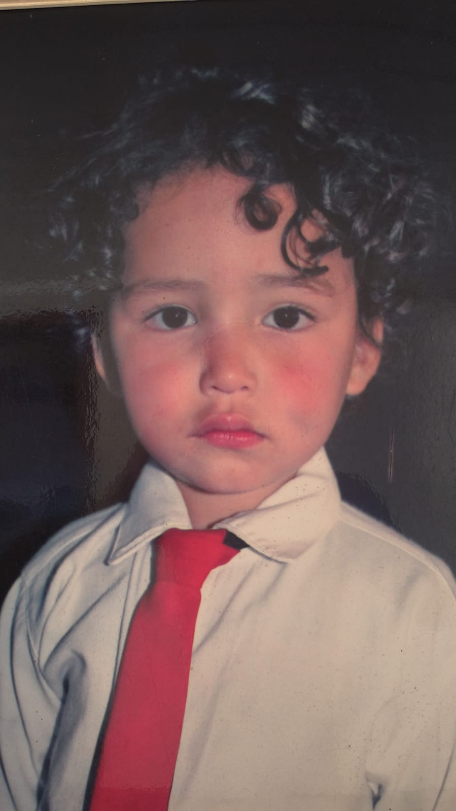

01
THIAGO HENING FIERAKOSKI
Um registro pessoal da trajetória escolar e dos textos que escrevi ao longo do caminho.
Meu nome é Thiago Hening Fierakoski. Este espaço reúne um pouco da minha vida escolar em Santa Catarina e as redações produzidas nas aulas. É uma forma de organizar o que ficou pelo caminho e apresentar o que fui construindo até aqui.

THIAGO HENING FIERAKOSKI · 2026
EXPLORE
ARQUIVO DE MEMÓRIAS
Trajetória escolar
Clique em cada etapa para abrir o registro daquele período.
02
Gleidis Rodrigues
Timbó Grande, SC ABRIR →03
Norma Mônica Sabel
Gaspar, SC ABRIR →04
Honório Miranda
Gaspar, SC ABRIR →05
Morelli
Meio do 1º ano ABRIR →06
Do segundo ano pra frente
Ensino Médio ABRIR →BIBLIOTECA DIGITAL
As redações
Textos que escrevi em sala. Temas diferentes, o mesmo esforço de tentar argumentar direito.
Encerrando essa etapa
O Ensino Médio chega ao fim. O que vem depois ainda está em aberto.
Terminar o Ensino Médio mistura alívio e dúvida. Tem a sensação de ter cumprido uma etapa longa e, ao mesmo tempo, a pergunta do que vem na sequência.
Ao longo desses anos escrevi bastante. As redações que estão neste site são parte disso. Cada tema pedia um jeito diferente de organizar ideia, argumento e conclusão. Nem sempre ficou fácil, mas o exercício de escrever ajudou a pensar com mais clareza.
Também ficam as pessoas. Colegas de sala, professores que cobravam e os que davam uma força quando a matéria apertava. O cotidiano da escola, os intervalos e os trabalhos em grupo fazem parte do que essa fase significou.
Agora é outro ciclo. Ainda não está tudo definido, e tudo bem. O que importa é seguir com o que já aprendi até aqui e continuar construindo o resto no caminho.